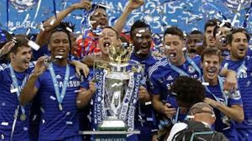
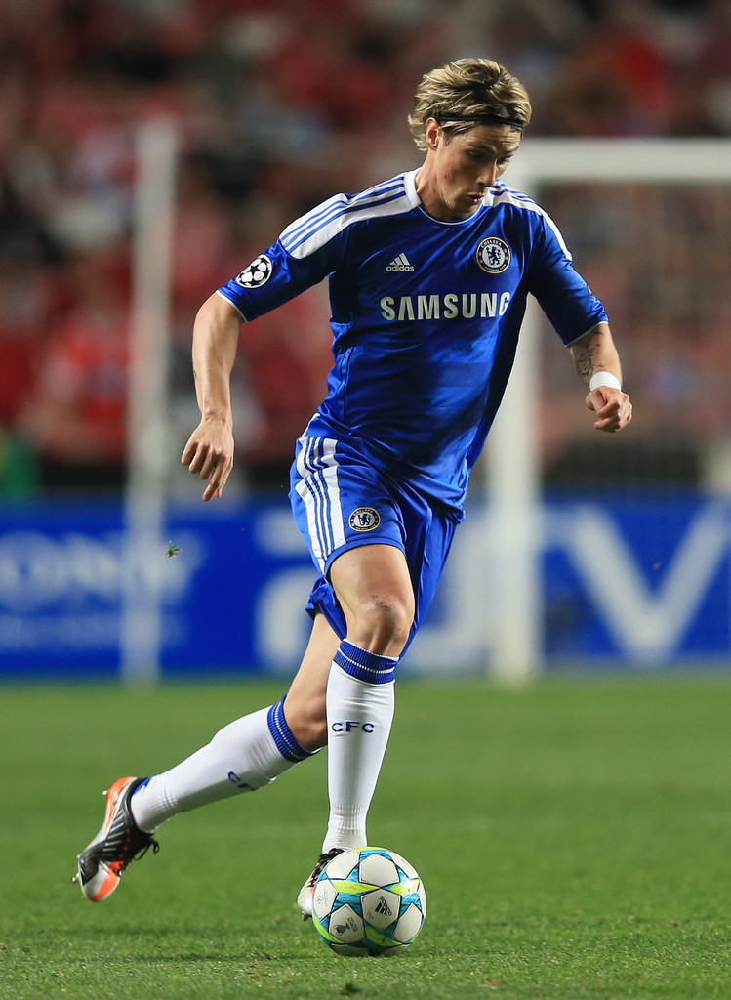

⚽
🎖️
🏆
Chelsea is considered as one of the most successful football clubs in the history. In 1955, the club won the league championship. It was considered as the first success. In 1965 until 1990, there were several competitions that this club won
"Chelsea gave me what I was looking for when I left Liverpool trophies. I'll always see it as a success".
Fernando Torres